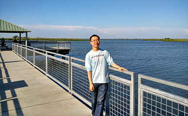
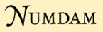

|
 |
About me👷 Postdoctoral Fellow My research interests lie in number theory, especially elliptic curves, class groups and character sums. 📍 Where am I: |
{kind=link}
Experience
- 2018/04 - 2023/03 Postdoctoral Fellow (Mentor: Yi Ouyang) USTC
- 2016/03 - 2018/03 Postdoctoral Fellow (Mentor: Ye Tian) AMSS CAS
- 2010/09 - 2015/11 Ph.D. in Mathematics (Advisor: Yi Ouyang) USTC
- 2006/09 - 2010/06 B.S. in Mathematics USTC
Research
- The distinctness and generating fields of twisted Kloosterman sums
(2021), submitted. - The generating fields of two Kloosterman sums
(2021), submitted. - The 3-class groups of Q(∛p) and its normal closure
with J. Li. Math Z. (2021), to appear. - The virtual period of the degree sequences of the exponential sums
ArXiV:2010.08342 (2020). - 𝓁-Class groups of fields in Kummer towers
with J. Li, Y. Ouyang and Y. Xu. Publ. Mat. (2020), to appear. - Birch's lemma over global function fields
with Y. Ouyang. Proc. Amer. Math. Soc. 145 (2016), no. 2, 577-584. - Newton polygons of L-functions of polynomials xd+axd-1 with p≡-1mod d
with Y. Ouyang. Finite Fields Appl. 37 (2016), 285-294. - On second 2-descent and non-congruent numbers
with Y. Ouyang. Acta Arith. 170 (2015), no. 4, 343-360. - On non-congruent numbers with 1 modulo 4 prime factors
with Y. Ouyang. Sci. China Math. 57 (2014), no. 3, 649-658.
Here are some notes.
- The curve and p-adic Hodge theory
Laurent Fargus, 2019/11/01 - 2020/01/10, MCM Beijing - p-adic abelian integrals
Pierre Colmez, 2016/09/14 - 2016/10/26, BICMR Beijing
Teaching
📚 Teaching
📒 Teaching Assistant
Links
| 📝丘成桐大学生数学竞赛 (Yau CSMC) 2010-2017年和部分2018年试题 |
| 📗10000 个科学难题·数学卷 |
| 📘一份不太简短的 LaTeX2ε 介绍 6.02版 推荐使用 TeX Live 或 MiKTeX 自带的编辑器 TeXworks |
| 📘XYpic中文简介 更详细的中文介绍请参考《LaTeX入门与提高》§12.4 |
| 📘李文威: 数学写作漫谈 |
| 📘李文威: 教学实践：经验、反思与构想 |
|
 NUMDAM |
DigiZ | Z-Library |
| MathSciNet |
|
MSC2020 |
| LetPub - 期刊查询及投稿分析系统 | ||
| LMFDB - the L-functions and modular forms database | ||
| Math Genealogy - 数学家谱网 | ||
 MathOverflow
- 数学问答网站
MathOverflow
- 数学问答网站
|
||
| 原版模组更多的合成 |
 原版模组入门教程
原版模组入门教程
|
|
 Gitee 镜像
Gitee 镜像
|
 GitHub 镜像
GitHub 镜像
|
|